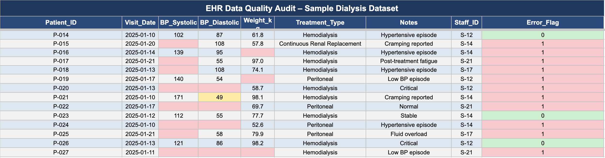
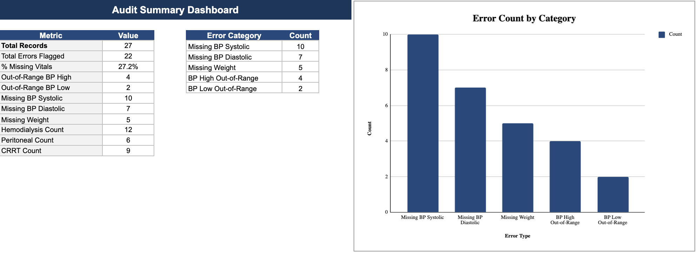
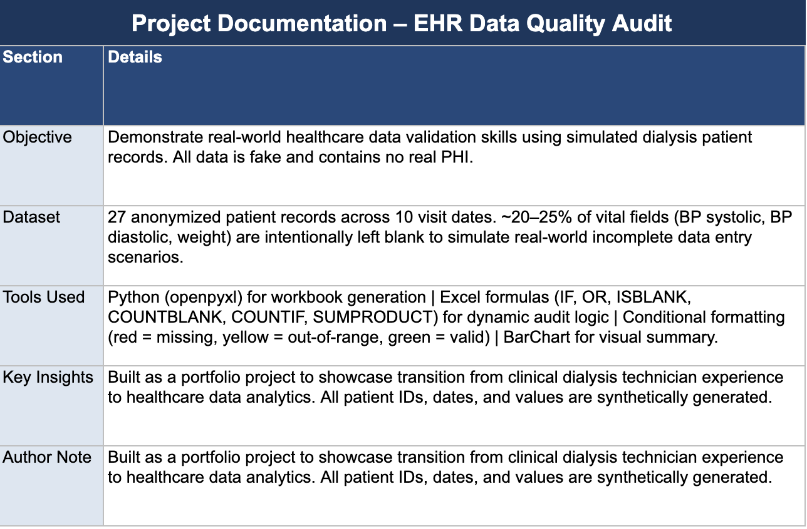

Detail-oriented healthcare and military professional with proven skills in data management, transitioning to Data Analytics. My hands-on expertise in electronic health records (EHR), data validation, and clinical workflow optimization equips me to deliver accurate insights in high-stakes settings.
I leverage significant clinical experience, including managing and validating real-time treatment data for over 50 patients weekly in a fast-paced dialysis environment. My background is rooted in maintaining 100% HIPAA compliance while bridging the gap between clinical operations and data integrity.
Developed a custom Excel/Google Sheets audit tool to validate sample patient records for completeness and accuracy. This project simulates real-world clinical data validation to ensure regulatory compliance and patient safety.
Project Gallery:



Goodyear, AZ
Honolulu, HI
Western Governors University | In Progress
Oregon State University | Corvallis, OR